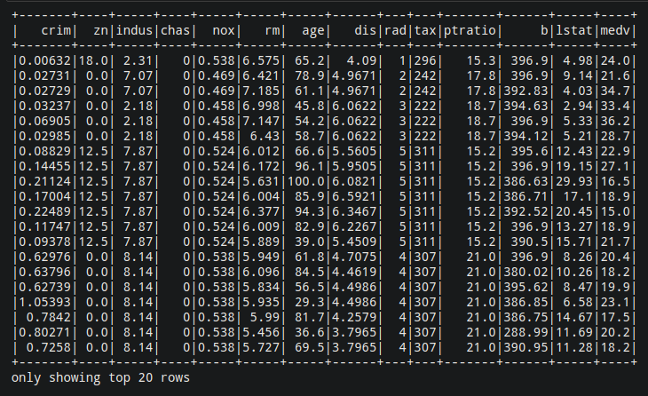
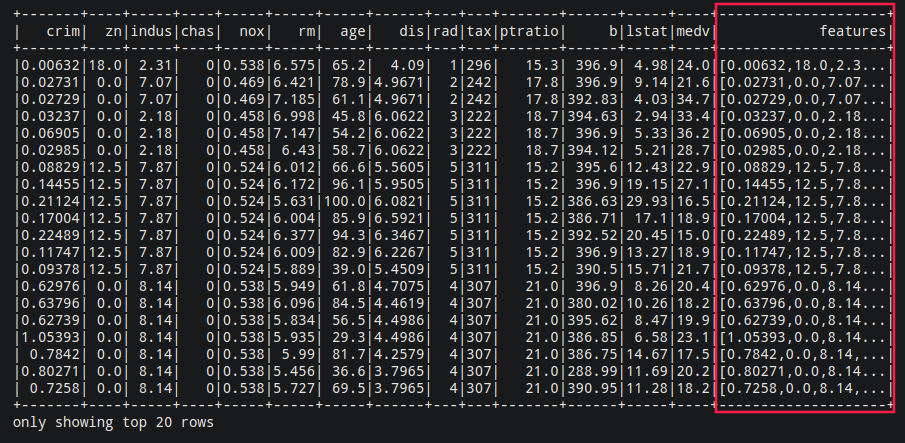
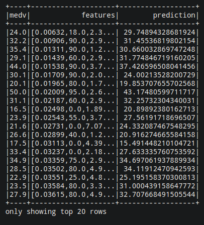

Work done by Mehdi CHEBBAH
Table of ContentsWORKING ENVIRONMENTApache SparkMLlibfindsparkNumpyJupyterGETTING HANDS DIRTYDataset acquisitionDataset pre-processingModel constructionPerformance evaluationUnlabelled data predictionBIBLIOGRAPHY & WEBOGRAPHY
The goal of this mini project is to get started with the MLlib library of Apache Spark. I will try to solve some interesting machine learning use cases in a well structured way. In the end, I will get a well-trained ML model that solves a real-world problem.
In the first part, I will focus on getting the data and preparing it for processing ( data Pre-Processing ), which is a very important task in a data scientist's day. I will then move on to the actual training of the model. Then it's validation.
To do this I work in the following environment:
Apache Spark is an open-source cluster-computing framework. Originally developed at the University of California, Berkeley's AMPLab. Spark provides an interface for programming entire clusters with implicit data parallelism and fault tolerance.
Installation: To install it just download the package from the official website and follow the installation steps.
Test the installation: run this command
/path/to/spark/bin/pyspark --version
Apache Spark MLlib is a machine learning library that includes common machine learning algorithms and utilities, including classification, regression, clustering, collaborative filtering and dimensionality reduction.
Installation: included in Spark by default.
To facilitate access to Apache Spark, we will use findpark. This is a very simple library that automatically configures the development environment to import the Apache Spark library.
Installation: run the following command (you must have
pip3installed)pip3 install findspark
Numpy is a famous numerical calculation library in Python.
Installation: run the following command
pip3 install numpy.
Jupyter Notepad is an open source web application that allows you to create and share documents containing live code, equations, visualizations and narrative text. Uses include: data cleaning and transformation, numerical simulation, statistical modeling, data visualization, machine learning and more.
Installation: run the following command (it requires
pip3to be installed)pip3 install jupyter
In this mini-project, I will try to make a linear regression model to predict the famous Boston Housing data set. (Download HERE)
This dataset contains information collected by the U.S Census Service regarding housing in the Boston Mass area. It was obtained from the StatLib archive and has been widely used in the literature to compare algorithms.
The dataset is small with only 506 cases. It contains 14 features described as follows:
The goal is to use the 13 features to predict the value of MEDV (which represents the price of housing).
To get started we'll create a new notebook of jupyter to do:
1$ jupyter notebookThen we import the findsparke library
xxxxxxxxxx21import findspark2findspark.init('/opt/spark')Then we start a SparkSession:
xxxxxxxxxx21from pyspark.sql import SparkSession2spark = SparkSession.builder.getOrCreate()Then we read the dataset:
xxxxxxxxxx31data = spark.read.csv('./boston_housing.csv', header=True, inferSchema=True)2# header = True means that the first line contains the header3# inferSchema = True allows automatic detection of the underlying data schemaTo visualize the data:
xxxxxxxxxx11data.show()
Now comes the fun part... The MLlib algorithms expect the data to be represented in two columns: Features and Labels. Features is an array of data points of all the features to be used for prediction. The labels contain the output label for each data point.
In our example, the features are the columns from 1 to 13, the labels are the MEDV column which contains the price.
xxxxxxxxxx51feature_columns = data.columns[:-1]2from pyspark.ml.feature import VectorAssembler3assembler = VectorAssembler(inputCols=feature_columns,outputCol="features")4# outputCol = "features" defines the name of the output vector that combines all values5data_2 = assembler.transform(data)Now we notice the creation of a new column named "features" which contains all the values combined in a list
xxxxxxxxxx11data_2.show()
As in all machine learning workflows, we divide the data into train and test. Here, we split it into 70% train examples and 30% test examples.
xxxxxxxxxx11train, test = data_2.randomSplit([0.7, 0.3])Now we have finished preparing the data for training. We can start working on the model.
We will use the LinearRegression class for the training of the model
xxxxxxxxxx11from pyspark.ml.regression import LinearRegressionThen we define the column of features and the column of labels.
xxxxxxxxxx11algo = LinearRegression(featuresCol="features", labelCol="medv")Now it's time for training
xxxxxxxxxx11model = algo.fit(train)And voilà, we have built a model of ML in Spark.
To test the performance of our model we will try to predict the labels of the test-set and then see the mean absolute error or coefficient of determination (R2) or mean square deviation for example. To do so:
xxxxxxxxxx71evaluation_summary = model.evaluate(test)2evaluation_summary.meanAbsoluteError3# Output: 3.46052726526246524evaluation_summary.rootMeanSquaredError5# Output: 4.7210359116371296evaluation_summary.r27# Output: 0.7643918170167411We notice that R2 is close to 1 so we accept the model.
To predict the outputs of unlabeled data, you call the model.transform function while passing your DataFrame.
For example we will try to predict the labels of the test-set
xxxxxxxxxx11predictions = model.transform(test)To view our results
xxxxxxxxxx21predictions.select(predictions.columns[13:]).show()2# J'ai filtrer les resultats pour des resons d'affichage